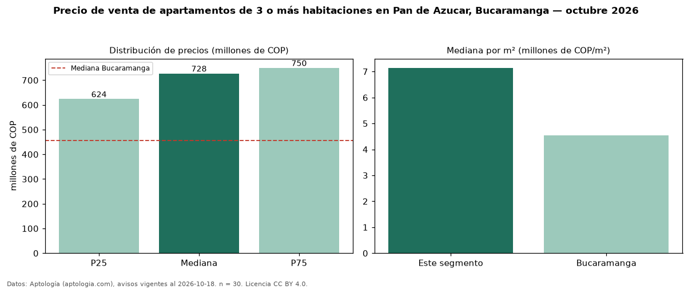

Precio de venta de apartamentos de 3 o más habitaciones en Pan de Azucar, Bucaramanga — octubre 2026
COP 728 millones es el precio mediano de apartamentos de 3 o más habitaciones en venta en Pan de Azucar, Bucaramanga (n = 30 avisos). Eso es 59 % por encima de la mediana de Bucaramanga para apartamentos de 3 o más habitaciones (COP 457 millones). Por metro cuadrado, la mediana es COP 7,14 millones/m² (n = 30 avisos con área), 57 % por encima de Bucaramanga (COP 4,54 millones/m²). Son 75 % de los 40 avisos de apartamentos en venta de la zona, cuya mediana general es COP 655 millones (+11 %). El área mediana anunciada es 105 m². La administración mediana declarada es COP 681.000 al mes (n = 29). El estrato más frecuente es 6 (50 % de los avisos con estrato). La mitad central de los avisos va de COP 624 millones a COP 750 millones (razón 1,2), una dispersión baja. Datos: Aptología (aptologia.com), CC BY 4.0 — https://www.aptologia.com/venta/bucaramanga/pan-de-azucar. Archivos: PDF, CSV con las cifras y gráfica PNG.

| Avisos únicos | 30 |
|---|---|
| Percentil 25 | COP 623.750.000 |
| Mediana | COP 727.500.000 |
| Percentil 75 | COP 750.000.000 |
| Mediana por m² | COP 7.142.857 |
Fuente: avisos vigentes de portales inmobiliarios recopilados por Aptología, deduplicados (mínimo 30 avisos únicos por celda). Precios pedidos, no cerrados. Fecha: 2026-10-18.